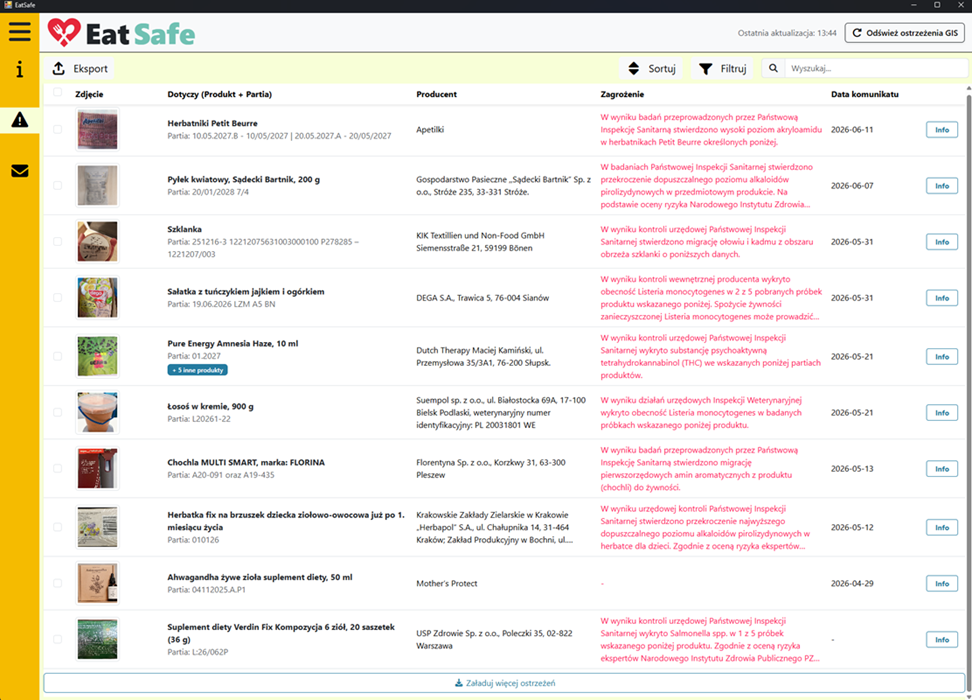

EatSafe
Food safety GIS warnings monitor
I started this project and led a team of four. It scrapes official food safety alerts, processes them and sends email notifications. It runs as a desktop and web hybrid, with a REST API for CRUD operations and validation on top of SQLAlchemy.
View on GitHub